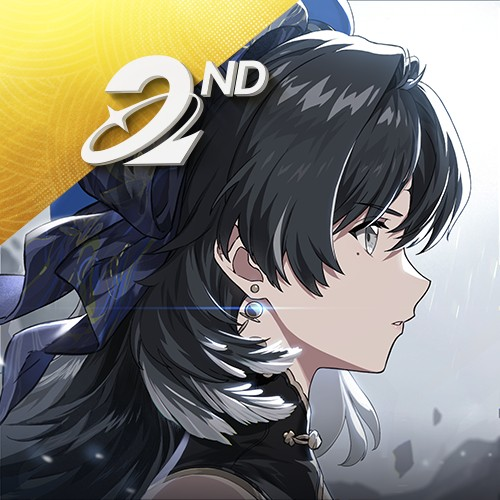

B站直播日报汇总
2026-11-23 · 官方 0/15 开播 · KOL 7/13 开播
7/28
开播间
52h34m
累计时长
61,491
有效弹幕（原始 85,358，剔除 23,867）
📊 当日全场舆情（7 间开播 · 三维打点）
风险等级：低（0.8%） 判定 v3.2-m5.0
有效弹幕 61,491（剔噪声 0） ｜
正向率 14.6% ｜ 负向率 16.4% ｜
判定来源：consensus 59689（97%）多源 1802（3%）
① 话题分布
游戏 7824（13%） ｜ 泛讨论 53667（87%）
正面中性负面
游戏话题game13%
正 1673·中 4071·负 20807,824 条
泛讨论话题meta87%
正 7308·中 38384·负 797553,667 条
游戏话题 · 明细
角色26%2,057
玩法25%1,985
商业化17%1,314
剧情11%831
竞品对比6%486
版本节奏6%485
音乐音效4%342
技术4%324
展开其余 5 个话题收起▾
泛讨论话题 · 明细
泛讨论97%52,011
主播KOL1%756
社区生态1%460
厂商动态1%440
展开其余 1 个话题收起▾
② 情感分布
偏正面 8981（15%）中性 42455（69%）偏负面 9934（16%）负面为主 121（0%）
③ 风险标签
高 145 ｜ 中 331 ｜ 低 8 ｜ 无 61007
社区互撕/引战 259泄露/开盒 117产品事故 67涉政敏感 26性别对立 12阶级/地域对立 8
代表性评论
- [泛讨论]“棉签好快”
- [角色]“你老婆🐻挺大”
- [玩法]“ai已经锁定了，等一个快慢刀”
- [商业化]“强颜欢笑”
- [剧情]“男女主好感度会触发隐藏CG 旮旯game”
⚠️ 风险弹幕样本（共 476 条，展示前 6）
- · [社区互撕/引战] 乐府被蜜瓜骂“空心人”破防了，不得劲
- · [社区互撕/引战] 主要他们太唐了想不出自己网民就套用鸣潮角色名字在写个饭圈前缀
- · [泄露/开盒] 人肉盾牌
- · [泄露/开盒] 你不用IOS七麦流水怎么办
- · [产品事故] 今晚直播直接道歉怎麼說
- · [产品事故] 你道歉了更是你做错了
口径：三维正交打点（话题/情感/风险互不耦合）。有效弹幕 = 剔除抽奖刷屏/纯社交噪声后的弹幕。
风险率 = risk_level∈(中,高) 弹幕数 ÷ 有效弹幕数。分歧/反讽/风险候选 1802 条；真实LLM覆盖 0 条，规则兜底复核 728 条。
游戏直播热度看板
快照时间：2026-11-23（历史补跑） ｜ 全天开播量=24h去重累计 ｜ 官方关注数/Top3/头部主播=今日实时 ｜ 开播趋势=开播量日环比 ｜ 数据来源：B站直播分区API
今日争议 TOP3（按游戏 / 按直播间）
口径：按话题（topic）聚合争议，看情感分歧与风险条数；兜底话题「综合讨论」不单独成争议。
按游戏聚合
TOP1
原神 · 泛讨论
围绕【泛讨论】出现明显分歧（2523条，正256/负367）。
25036
TOP2
明日方舟 · 泛讨论
围绕【泛讨论】出现明显分歧（18032条，正1809/负2189，含 3 条风险弹幕）。
18032
TOP3
鸣潮 · 泛讨论
围绕【泛讨论】出现明显分歧（7834条，正2194/负1286，含 56 条风险弹幕）。
7834
按直播间聚合
TOP1
魔法Zc目录 · 泛讨论
围绕【泛讨论】出现明显分歧（18032条，正1809/负2189，含 3 条风险弹幕）。
18032
TOP2
企鹅带带北极熊 · 泛讨论
围绕【泛讨论】出现明显分歧（9132条，正974/负1137）。
9132
TOP3
热爱游戏张大狗 · 泛讨论
围绕【泛讨论】出现明显分歧（7834条，正2194/负1286，含 56 条风险弹幕）。
7834
官方直播间
开播 0/15 ｜ 弹幕 0 条 ｜ 时长 0h00m
原神（21987615）
👥 20,971,500 关注未开播
崩坏：星穹铁道（27263119）
👥 12,560,810 关注未开播
绝区零（32805602）
👥 8,152,190 关注未开播
明日方舟（5555734）
👥 7,656,003 关注未开播

鸣潮（27354807）
👥 5,410,170 关注未开播
明日方舟终末地（1921300321）
👥 4,922,689 关注未开播
网易第五人格手游（5887574）
👥 4,881,856 关注未开播
异环（1890951177）
👥 3,038,815 关注未开播
暗区突围（24807588）
👥 2,673,522 关注未开播
待核房间_26284671（26284671）
👥 1,187,988 关注未开播
望月（1892451545）
👥 738,990 关注未开播
遗忘之海（1974514268）
👥 572,659 关注未开播
伊莫（1746235011）
👥 433,974 关注未开播
归环（1992270167）
👥 299,847 关注未开播
待核房间_1942243734（1942243734）
👥 51,844 关注未开播
KOL 直播间
开播 7/13 ｜ 弹幕 61,491 条 ｜ 时长 52h34m
你的影月月（21414905）👥 10,716,540 关注
📡 开播 🔥 热门 70 🛡️ 风险 低（0.1%）🏷️ KOL标签：商单频率：中 ｜ 方向：原神 / 星铁 / 绝区零 / 攻略评测
🎮 主内容：原神
🏷️ Top话题：原神(35) / 终末地(4) / 角色(4)
💬 弹幕信号：
偏正面 62411%中性 368765%偏负面 139624%负面为主 30%
📊 舆情三维（话题 / 情感 / 风险）
有效 5710
🟢低 0.1%
话题分布
正面中性负面
游戏话题game11%
正 110·中 356·负 164630 条
泛讨论话题meta89%
正 514·中 3331·负 12355,080 条
游戏话题 · 明细
玩法34%217
角色23%147
商业化18%113
版本节奏7%43
剧情7%42
技术6%38
音乐音效2%16
竞品对比2%14
展开其余 5 个话题收起▾
泛讨论话题 · 明细
泛讨论98%4,967
主播KOL2%98
社区生态0%10
厂商动态0%5
展开其余 1 个话题收起▾
代表性评论
- [泛讨论] “猫猫出没”
- [玩法] “闪避技能”
- [角色] “盾狗的神秘小装备”
争议焦点：TOP1 泛讨论 4967TOP2 玩法 217TOP3 角色 147
围绕【泛讨论】出现明显分歧（4967条，正495/负1216，含 2 条风险弹幕）。
魔法Zc目录（3044248）👥 3,476,232 关注
📡 开播 🔥 火爆 87 🛡️ 风险 低（0.3%）🏷️ KOL标签：商单频率：中 ｜ 方向：明日方舟 / 终末地 / 星铁 / 直播反应
🎮 主内容：剧情
🏷️ Top话题：剧情(27) / 画面(17) / 支线(17)
💬 弹幕信号：
偏正面 229311%中性 1567376%偏负面 262413%负面为主 210%
📊 舆情三维（话题 / 情感 / 风险）
有效 20611
🟢低 0.3%
话题分布
正面中性负面
游戏话题game11%
正 459·中 1491·负 3922,342 条
泛讨论话题meta89%
正 1834·中 14182·负 225318,269 条
游戏话题 · 明细
角色34%797
玩法27%640
剧情14%334
商业化9%206
音乐音效7%163
竞品对比4%88
技术2%58
版本节奏2%56
展开其余 5 个话题收起▾
泛讨论话题 · 明细
泛讨论99%18,032
主播KOL1%159
厂商动态0%61
社区生态0%17
展开其余 1 个话题收起▾
代表性评论
- [泛讨论] “Zdjd”
- [角色] “国产也好看”
- [玩法] “练度说是”
争议焦点：TOP1 泛讨论 18032TOP2 角色 797TOP3 玩法 640
围绕【泛讨论】出现明显分歧（18032条，正1809/负2189，含 3 条风险弹幕）。
企鹅带带北极熊（23121424）👥 3,282,385 关注
📡 开播 🔥 热门 78 🛡️ 风险 低（0.0%）🏷️ KOL标签：商单频率：中 ｜ 方向：原神 / 星铁 / 绝区零 / 付费内容 / 抽卡
🎮 主内容：抽卡
🏷️ Top话题：抽卡(3) / 战斗(2) / 画面(2)
💬 弹幕信号：
偏正面 112811%中性 766774%偏负面 161516%负面为主 40%
📊 舆情三维（话题 / 情感 / 风险）
有效 10414
🟢低 0.0%
话题分布
正面中性负面
游戏话题game11%
正 147·中 576·负 4621,185 条
泛讨论话题meta89%
正 981·中 7091·负 11579,229 条
游戏话题 · 明细
玩法42%501
角色27%323
商业化10%118
技术8%89
版本节奏6%74
剧情2%30
竞品对比2%30
音乐音效2%20
展开其余 5 个话题收起▾
泛讨论话题 · 明细
泛讨论99%9,132
主播KOL1%83
厂商动态0%11
社区生态0%3
展开其余 1 个话题收起▾
代表性评论
- [泛讨论] “你甘心吗”
- [玩法] “熊哥，今天还会带来什么小众且变态地阵容啊？”
- [角色] “没特定动作没推流[三星堆]”
争议焦点：TOP1 泛讨论 9132TOP2 玩法 501TOP3 角色 323
围绕【泛讨论】出现明显分歧（9132条，正974/负1137）。
棉花大哥哥（103）👥 2,723,286 关注
📡 开播 🔥 热门 72 🛡️ 风险 低（0.0%）🏷️ KOL标签：商单频率：高 ｜ 方向：泛二游直播 / 米哈游系 / 鸣潮 / 终末地 / 社区节奏
🎮 主内容：剧情
🏷️ Top话题：剧情(30) / 战斗(6) / 主线(6)
💬 弹幕信号：
偏正面 34512%中性 213872%偏负面 49817%负面为主 30%
📊 舆情三维（话题 / 情感 / 风险）
有效 2984
🟢低 0.0%
话题分布
正面中性负面
游戏话题game12%
正 76·中 170·负 116362 条
泛讨论话题meta88%
正 269·中 1968·负 3852,622 条
游戏话题 · 明细
角色33%120
商业化22%81
剧情16%56
玩法13%48
技术10%37
竞品对比3%10
音乐音效2%7
版本节奏1%3
展开其余 5 个话题收起▾
泛讨论话题 · 明细
泛讨论96%2,523
主播KOL2%66
社区生态1%23
厂商动态0%10
展开其余 1 个话题收起▾
代表性评论
- [泛讨论] “棉签好快”
- [角色] “你老婆🐻挺大”
- [商业化] “强颜欢笑”
争议焦点：TOP1 泛讨论 2523TOP2 角色 120TOP3 商业化 81
围绕【泛讨论】出现明显分歧（2523条，正256/负367）。
神奇陆夫人（115）👥 1,751,237 关注
📡 开播 🔥 火爆 84 🛡️ 风险 低（0.5%）🎮 主内容：剧情
🏷️ Top话题：剧情(19) / 崩铁(15) / 终末地(15)
💬 弹幕信号：
偏正面 151216%中性 674570%偏负面 132714%负面为主 190%
📊 舆情三维（话题 / 情感 / 风险）
有效 9603
🟢低 0.5%
话题分布
正面中性负面
游戏话题game10%
正 264·中 470·负 248982 条
泛讨论话题meta90%
正 1248·中 6275·负 10988,621 条
游戏话题 · 明细
商业化24%241
角色22%218
玩法21%204
音乐音效8%78
竞品对比7%66
剧情6%64
版本节奏6%62
技术5%49
展开其余 5 个话题收起▾
泛讨论话题 · 明细
泛讨论98%8,414
主播KOL1%103
厂商动态1%56
社区生态1%48
展开其余 1 个话题收起▾
代表性评论
- [泛讨论] “夫—人—晚—上—好”
- [商业化] “网易现在基本所有歌都要会员才能听，已经卸载好久了”
- [角色] “老陆，那刻夏3-7上满拐换一套暴力装备真的很有力气[dog]这才是入画启航啊”
争议焦点：TOP1 泛讨论 8414TOP2 商业化 241TOP3 玩法 204
围绕【泛讨论】出现明显分歧（8414条，正1231/负1034，含 4 条风险弹幕）。
OldBa1（529）👥 1,728,689 关注
📡 开播 🔥 热门 62 🛡️ 风险 低（0.2%）🎮 主内容：剧情
🏷️ Top话题：剧情(26) / 角色(16) / 主线(7)
💬 弹幕信号：
偏正面 38025%中性 92661%偏负面 21114%
📊 舆情三维（话题 / 情感 / 风险）
有效 1517
🟢低 0.2%
话题分布
正面中性负面
游戏话题game25%
正 209·中 129·负 42380 条
泛讨论话题meta75%
正 171·中 797·负 1691,137 条
游戏话题 · 明细
商业化44%166
角色23%88
玩法13%50
剧情10%37
音乐音效5%20
版本节奏3%12
竞品对比2%6
技术0%1
展开其余 5 个话题收起▾
泛讨论话题 · 明细
泛讨论98%1,109
主播KOL1%16
厂商动态0%6
社区生态0%6
展开其余 1 个话题收起▾
代表性评论
- [泛讨论] “来啦来啦”
- [商业化] “欧气附体”
- [角色] “来了来了”
争议焦点：TOP1 泛讨论 1109TOP2 商业化 166TOP3 角色 88
围绕【泛讨论】出现明显分歧（1109条，正169/负161，含 1 条风险弹幕）。
热爱游戏张大狗（7282964）👥 76,189 关注
📡 开播 🔥 热门 75 🛡️ 风险 低（3.3%）🏷️ KOL标签：商单频率：中 ｜ 方向：鸣潮 / 终末地 / 异环 / 泛二游舆情
🎮 主内容：鸣潮
🏷️ Top话题：鸣潮(342) / 原神(162) / 角色(148)
💬 弹幕信号：
偏正面 269925%中性 561953%偏负面 226321%负面为主 711%
📊 舆情三维（话题 / 情感 / 风险）
有效 10652
🟢低 3.3%
话题分布
正面中性负面
游戏话题game18%
正 408·中 879·负 6561,943 条
泛讨论话题meta82%
正 2291·中 4740·负 16788,709 条
游戏话题 · 明细
商业化20%389
角色19%364
玩法17%325
竞品对比14%272
剧情14%268
版本节奏12%235
技术3%52
音乐音效2%38
展开其余 5 个话题收起▾
泛讨论话题 · 明细
泛讨论90%7,834
社区生态4%353
厂商动态3%291
主播KOL3%231
展开其余 1 个话题收起▾
代表性评论
- [泛讨论] “饿就吃饭[汤圆]”
- [商业化] “看成小象连麦送大月球了[dog]”
- [角色] “这期有雷霆大眼，把我推老远”
争议焦点：TOP1 泛讨论 7834TOP2 商业化 389TOP3 玩法 325
围绕【泛讨论】出现明显分歧（7834条，正2194/负1286，含 56 条风险弹幕）。
卡特亚（1455691）
👥 3,454,719 关注未开播
🏷️ KOL标签：商单频率：中 ｜ 方向：原神 / 星铁 / 绝区零 / 鸣潮 / 直播反应
嘉然今天吃什么（22637261）
👥 1,874,349 关注未开播
乃琳Queen（22625027）
👥 1,132,783 关注未开播
贝拉kira（22632424）
👥 742,740 关注未开播
屑芙蒂（5805449）
👥 262,676 关注未开播
🏷️ KOL标签：商单频率：低 ｜ 方向：NIKKE / 胜利女神 / 垂直攻略 / 角色解析
黑衣侦探（8224585）
👥 57,121 关注未开播
🏷️ KOL标签：商单频率：中 ｜ 方向：鸣潮 / 异环 / 终末地 / 泛二游节奏
开播 UP 详情数据
点击上方卡片会跳转到本页内对应详情；详情内容已内嵌在同一个 HTML 中。
自动生成 | 数据来源：腾讯云监控 + 本地CSV | 2026-11-23